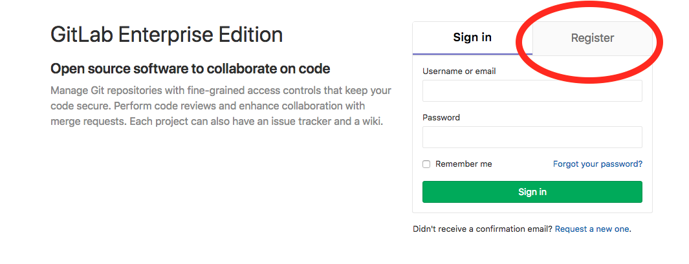
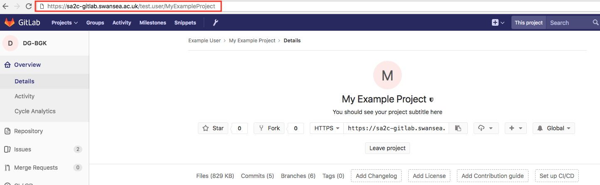

SA2C GitLab usage
Table of Contents
1 Gitlab Usage
The following document describes steps necessary to use the SA2C GitLab to manage code on SCW infrastructure.
1.1 Setting up Git
Git can be used from the login nodes (e.g. ssl001) to pull code from the outside. Note however that in order to do this, a proxy connection should be used. Please ensure that you are running version 2.9.5 of git.
Note: If you have previously installed git, and are using git 1.9.0, you will need to remove any references that you have added to your profile files (.bashrc, .profile etc).
In order to have git available, log into a job submission node (e.g. ssl001) and open the .bashrc file. You can do this on the command line by typing:
nano ~/.bashrc
At the end of the file, add the following lines:
module load git/2.9.5 export https_proxy=https://10.211.143.6:8080
You will need to log out of the job submission node and back in again in order for these changes to take effect. You may now test your git setup. You can do this easily by listing the branches of a remote repository, for example SLURM, using the following command:
git ls-remote -h https://github.com/SchedMD/slurm
If unsuccessful this command will return an error message, such as:
fatal: unable to access 'https://github.com/SchedMD/slurm/': Failed to connect to github.com port 443: No route to host
If you see a list of remote heads for the SLURM workload manager, the previous commands have been successful. Below is a sample output given today, note that exact output that you see will likely differ.
59c02e4f984ac9a4eb648166b8744132f7238e63 refs/heads/b4847 2fdf92d782d9920583ccfa2d6ad28b3ebd0b846b refs/heads/bug_4584 bc22cda6dee857959e6f2107a10b3704c884fd81 refs/heads/cli_filter d04f3b0712f67667d2de91852863fd84bd7b3228 refs/heads/cray_pack 128be108d49c3389db4f3d0f342d3e09f9465c88 refs/heads/dw_up06 ec8c44e7175c864e994a16e575b7e0d23e692ff4 refs/heads/federation beda3baa537027ef77cfd43d65817b9735ab1998 refs/heads/fedlab a2ed2a0e1730edf56a4547ff920dfbdbcb3c7b27 refs/heads/influxdb 94f64c34d75714f6f0baa1d1aec8b1cb50ec5321 refs/heads/loadleveler 9c812ab57bb4d4e79ee7e888420b83c0ce65c1f3 refs/heads/master b3db0fc049f86a9e71355eb6d6982a228a0b2095 refs/heads/max_priority 451675e755b7c7fdcd322fedf93ab6b2ce0e15a3 refs/heads/scontrol_json 6793b46de9c7a8780a2fe66cb6bc1dfa0fbbe625 refs/heads/shmem_pmi acd6440b45254ceea87e606d2ca6b5df0cb86116 refs/heads/simulator 4876672c6b474c23e19c76d666101aa72b4e1562 refs/heads/slurm-1.0 bfc14bf3405c2386ce303fea08b67dd4778e3923 refs/heads/slurm-1.1 93d5dcb63f041b71e309c35a3221a92ee57335e7 refs/heads/slurm-1.2 616fc7b3889fe0c2fb9b74bedbe647a9debd7f5a refs/heads/slurm-1.3 bda0a436fe734303c0329055c004d4a5758dbc17 refs/heads/slurm-14.03 4109fcbfd71a8c5b0fffd284f35c55155f4fa513 refs/heads/slurm-14.11 b3107d89747875de42e2ca7c14ce1d5dd283c99a refs/heads/slurm-15.08 da4397efa315745930b15367f2956f79597c5b9d refs/heads/slurm-16.05 252d0573a6cec490acee501903a3f0af6c5b1a84 refs/heads/slurm-17.02 6d4518feb2578c21fab675f42b639eb02844c17f refs/heads/slurm-17.11 bbdd07c1d8d667e1a3b387c10951058b2628af73 refs/heads/slurm-2.0 5a6f41e2b91347c6a34ba9c7ee6e6bfe2836454a refs/heads/slurm-2.1 a0e6bbde1d9d8386aa729b5883f11530902fff08 refs/heads/slurm-2.2 ff26cc50db9e2fe2f9745a16c8c59fd3e0bd7ae8 refs/heads/slurm-2.3 29c2661a4410a0621ddace5881122106f4cb2a11 refs/heads/slurm-2.4 04f06338896c14e83a3d5fb0dec81c60d4aca071 refs/heads/slurm-2.5 63332d41b3232a1c7ceda976992b8ca2a22dcc39 refs/heads/slurm-2.6 594881bb4dbfbcc5868e36e8dc79ffc35d748a58 refs/heads/step_alloc d856b526c7364b2b9bd0e0a5c15cc84d9e74edc6 refs/heads/tresbilling_test ff8d659cba6005f41c3cc45356593d5ab093c5fe refs/heads/usage f153ac81b8e3c0c6553104bfa73041fc776675f3 refs/heads/xtconsumer
1.2 Gitlab user registration
In order to access code on our gitlab servers, you will need to create a user account, if you have done so already you may skip this section. Visit https://sa2c-gitlab.swansea.ac.uk, and click the "Register" link, as shown in the image:

Figure 1: GitLab sign in page
Complete your details, ensuring that you use your @swansea.ac.uk email address, and click Register.
1.3 GitLab project access
On first registration, you will not be able to see the code for any projects. Each project should have been assigned at least one user with "master" rights, who will in turn be able to add other users to the repository. The project owner may know the identity of the "master" user. If the identity is not known, or no master user has yet been assigned for this project, contact SA2C on https://sa2c-gitlab.swansea.ac.uk. Note that master users are able to assign other master users for their repositories.
1.4 Granting user access (for repository master users)
This section contains instructions for users with "master" rights to a repository to grant repository access to other users. Users who are not a master user may skip this section.
- Browse to the project page (Projects -> Your Projects -> click on the project name).
- Click "Settings" and then "Members" on the left hand side sidebar
- Select the user under "Select members to invite"
- Choose an appropriate role (i.e. permission level) for the user and an expiration date if necessary. You may click the "Read more" link to learn more about available permissions.
- Click "Add to project" to allow the user repository access.
1.5 Downloading the source code
Once gitlab access is set up, you can download the source directly from our gitlab pages. The easiest way is to visit the project page and copy the URL project MyExampleProject, in the image below, this would be https://sa2c-gitlab.swansea.ac.uk/test.user/MyExampleProject.

Figure 2: Project page
Now, on a job submission node (e.g. ssl001), you can download the source using:
git clone https://sa2c-gitlab.swansea.ac.uk/test.user/MyExampleProject
You will be prompted for you username, which is the email address with which you signed up for GitLab, and your password. The source will be downloaded to a directory in the current working directory.
1.6 Avoid typing password repeatedly
Only the https:// protocol is supported for git on Supercomputing Wales systems. This means that your machine will need to provide your username and password each time it tries to talk to our GitLab servers. Fortunately, git has a method for remembering passwords called "credential helpers". Documentation on this feature can be found at https://git-scm.com/docs/gitcredentials. In order to enable this feature globally, you may use the following command:
git config --global credential.helper cache
Git will then remember your username and password for GitLab for 15 minutes for all repositories. This time interval can be increased using a command such as:
git config --global credential.helper "cache --timeout=3600"
which will cause a timeout of 1 hour (3600 seconds).